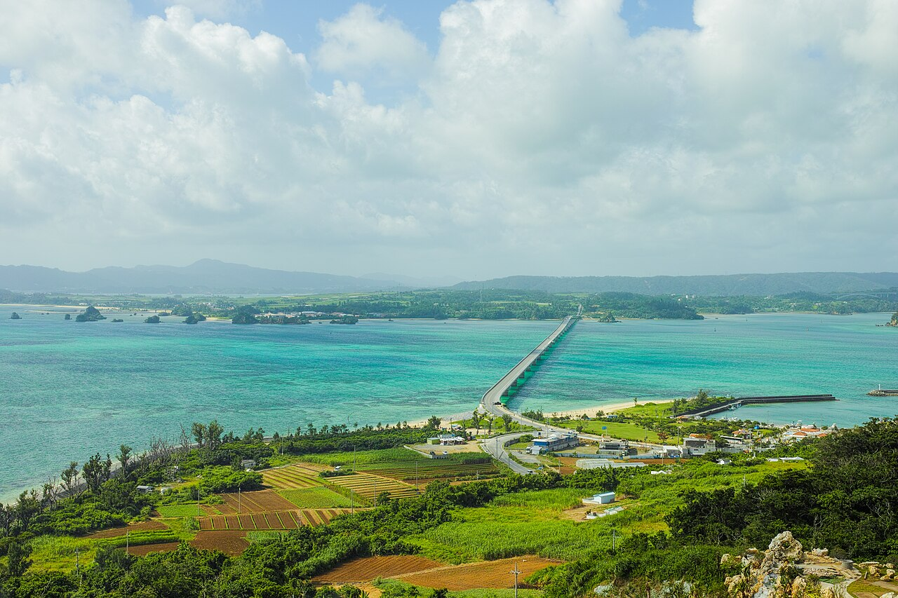

Okinawa · 5-day family itinerary
Two nights in Naha on the monorail, two on the Motobu Peninsula by hire car, and the paperwork for that car settled before you leave Australia.

Photo: Takuya ASADA, Kouri Bridge, CC BY 2.0, via Wikimedia Commons.
.jpg){kind=link}
Checked before you commit
This illustrative route spends two nights in Naha and two on the Motobu Peninsula, flying in and out of Naha Airport (OKA). Days 1 and 2 run on the Yui Rail monorail, so nobody has to drive. The hire car starts on Day 3, after the Shurijo day. Shurijo’s hours and new main-hall reservation rules, the aquarium’s hours and the rules for driving a hire car in Japan were checked against official and operator pages on 15 October 2026. Nothing was booked.
Naha first, north second. Shurijo and Kokusai-dori are on the monorail, so the car isn’t collected until the morning you head north. The aquarium puts Naha Airport to Churaumi at about two hours by car on the Okinawa Expressway, so that drive happens once each way, not as a day trip.
One anchor a day for a child under six and a primary-school child: Shurijo on Day 2, Churaumi on Day 3, Kouri Island and Nakijin on Day 4. Afternoons stay loose, and no day depends on a swim.
Flights, hotels, the hire car and the Shurijo time slot were not checked for your dates. A booking-hub link is intent only. It doesn’t reserve a car, a child seat or a main-hall slot.
Planning boundary: dates are illustrative. The worked example runs Monday 11 to Friday 15 January 2027. Shurijo’s English, Korean and Chinese pages were unavailable when we checked (the park posted a notice about a translation-system fault on 9 October 2026), so the hours and reservation rules here come from the park’s Japanese pages. Alfred does not check driving permits, child-seat rules or timed tickets while it writes the day. Book opens a partner checkout. It does not prove a booking exists. Okinawa is not one of the destination guides in the signed-in app.
Route and family-coordination brief
Party: two adults, one child under six and one primary-school child. Bases: two nights in central Naha near Kokusai-dori, then two nights on the Motobu Peninsula near Ocean Expo Park. Pace: moderate, one anchor a day. Budget input: Mid Range. The only prices stated here are the ones Shurijo Castle Park publishes.
Getting there and around Naha: fly into Naha Airport (OKA) and check routings for your dates. The Yui Rail monorail starts at Naha Airport station. The Japan National Tourism Organization (JNTO) says to ride it to Prefectural Office (Kencho-mae) station for one end of Kokusai-dori, or Makishi for the other. The street runs 1.6 km through central Naha.
The car and the paperwork: Smartraveller says that to drive in Japan you need a Japanese licence, or an International Driving Permit (IDP) together with a current Australian licence, and to get the IDP before you leave Australia. Tokyo’s Metropolitan Police say Japan only recognises permits issued under the 1949 Geneva Convention. The Australian Automobile Association (AAA) says Australian IDPs use that 1949 format, come as a physical book and are valid for 12 months. They only count alongside your physical photocard licence, because digital licences aren’t valid overseas. OTS Rent-a-car asks drivers for the IDP, the original licence and a passport, and doesn’t accept photocopies or digital versions. Under Japanese law a child under six must ride in a child seat, and OTS and Nippon Rent-A-Car both say they may refuse the rental if you haven’t booked one or brought your own.
The Shurijo clock: Seiden, the castle’s main hall, burned down in 2019. The rebuilt hall opens to the public from midday on 23 November 2026. Going inside needs a reservation for a 30-minute time slot. For visits from 1 January 2027, slots go on sale at 1.00 pm Japan time on the 1st of the month two months ahead. For this January example that is 1 November 2026, 3.00 pm in Melbourne and Sydney. Preschool children don’t need a reservation. From 23 November, paid-area tickets are ¥1,000 for adults, ¥760 for high school students and ¥370 for primary and junior high school students. Children under six go free. The season helps too: Smartraveller gives May to November as Japan’s typhoon season, so January sits outside it.
Day 1 — Land at OKA and stay on the monorail
Land at Naha Airport and walk to Yui Rail’s Naha Airport station. Ride the monorail into the city and get off at Prefectural Office or Makishi, whichever is closer to your hotel. Kokusai-dori runs between the two. JNTO notes many shops there stay open until 11 pm, so there’s no need to rush it today.
For an early dinner, try the covered arcades off Kokusai-dori, such as Ichiba-hondori. Tonight’s only job is to check tomorrow’s Seiden time slot and have the ticket QR code ready on your phone. No car today means no driving documents are needed yet.
Fallback: if the flight lands late, skip Kokusai-dori. It works just as well tomorrow evening, and nothing on Day 1 is booked by the clock.
Live-check: flight times; whether your hotel is nearer Prefectural Office or Makishi station; JNTO says Kokusai-dori closes to traffic on Sundays, which only matters if you move these dates.
Day 2 — Shurijo by monorail, with the Seiden slot in the quieter midday window
Ride Yui Rail to Shuri station. The park’s guide gives the walking times. It is about 20 minutes from the station to the Suimuikan visitor centre, 5 minutes on to the Shureimon gate and 15 to the ticket gate. From there it is another 15 to the entrance of Seiden, and about 15 minutes inside. Allow 90 to 120 minutes in all. The park suggests booking a slot about 40 to 50 minutes after you expect to reach Shuri station.
Choose the slot with the park’s congestion guide. It marks 8.30 to 11.00 am as very crowded and 12.00 to 2.00 pm as relatively quiet, so a late-morning start with a 12.30 pm slot suits young children. Under the December to March hours, the paid area is open 8.30 am to 6.00 pm, with last tickets at 5.30 pm.
Head back to Naha for an afternoon rest. Pack tonight, because tomorrow you check out with your luggage.
Fallback: if the Seiden slots for your day are gone, buy the no-reservation ticket. It covers the whole paid area except the inside of the main hall, including the viewing deck facing the hall and the reconstruction exhibition room. The park sells it online from one month ahead until 15 minutes before last entry.
Live-check: the slot on your ticket; the park’s Japanese hours page; whether same-day slots are left (sold online up to 15 minutes before the slot, or at the Kofukumon ticket office, only while space remains). If you bought through the park’s official Webket site, a reserved slot can be changed up to the day before, and refunded up to two days before.
Day 3 — Collect the hire car at OKA and drive north to Churaumi
Take the monorail back to Naha Airport station with your bags. Hire companies meet customers at shuttle stops across the road from the domestic terminal. Toyota Rent a Car uses stop 11-A and Times Car Rental uses stop 11, and both say their shops are about five minutes away. At the counter, each driver shows their own documents.
Fit the child seat before you leave. OTS says customers install the seat themselves, with staff help, and are responsible for checking it. The aquarium puts the drive from Naha Airport at about two hours on the Okinawa Expressway. Park at P7 by the north gate of Ocean Expo Park, which is closest to the aquarium. Parking at Ocean Expo Park is free.
Okinawa Churaumi Aquarium’s off-season hours are 8.30 am to 6.30 pm, with last admission at 5.30 pm. An early-afternoon arrival leaves time for the Kuroshio Sea tank, with its whale sharks and manta rays. The free 10-minute dolphin show at Okichan Theater, about five minutes’ walk from the aquarium exit, has afternoon shows at 3.00 pm and 5.00 pm. Check in near the park afterwards.
Fallback: if a driver’s documents aren’t right on the day, don’t drive. The aquarium says the express bus from Naha takes about three hours. Use it and keep the car for another trip.
Live-check: the aquarium’s hours page for your date (it lists no scheduled closing days until 31 March 2027, but warns of temporary closures for typhoons and the like); dolphin show times, which the aquarium has already suspended for maintenance from 4 to 9 January 2027, one reason this example starts on the 11th; some car navigation units can’t find the aquarium, so search “Ocean Expo Park” or use mapcode 553 075 797.
Day 4 — Kouri Island in the morning, Nakijin Castle Ruins after lunch
Cross Kouri Bridge to Kouri Island. Nakijin Village’s guide says the bridge is 1,960 m long, the longest on Okinawa’s main island. Visit Okinawa says you can drive around the island in about 15 minutes. Kouri Ocean Tower (82 m) looks back over the bridge and has a shell museum. Kouri Beach sits at the foot of the bridge, with cafes close by. Tinu Beach on the north side has the heart-shaped rocks. The northern beaches have no facilities or lifeguards, so treat them as a look, not a swim.
After lunch, drive to Nakijin Castle Ruins, the World Heritage-listed stronghold of the Hokuzan king. From January to April it’s open 8.00 am to 6.00 pm, with last entry at 5.30 pm. The village guide says a walk around the castle takes about 60 minutes. Free guides are on site, though there may be a wait. Children of primary-school age and younger get in free.
Fallback: if one stop is enough for the younger child, keep Kouri Island and drop the castle, or the other way round. Both are in Nakijin Village, close to a Motobu base. Without the car, Visit Okinawa says Yanbaru Express buses run from Motobu to Kouri Island in about an hour.
Live-check: castle hours on the official Nakijin page; Kouri Ocean Tower hours and entry fee (not checked here); wind and sea conditions before any time at the water’s edge.
Day 5 — Drive south early and hand back the car with time to spare
Leave the Motobu Peninsula in the morning. The aquarium gives about two hours from Naha Airport by expressway. The official Nakijin Castle page puts the airport about 110 km away, or 2 hours 45 minutes by car, so leave room between the two estimates.
Return the car to the shop you collected it from and take its shuttle to the terminal. Return times differ by company. Luana Rent a Car, for example, asks customers to be back about two hours before their flight. Check your own company’s return time and office hours when you book.
Fallback: if your flight leaves before about midday, move the last night to Naha and drive south on the afternoon of Day 4.
Live-check: the hire shop’s return hours; airline check-in cut-off; weather warnings (Luana says its free airport shuttle stops running while a storm warning is in effect).
Planning notes
Dates are illustrative. At decision time, recheck Shurijo’s hours and slot availability, the aquarium’s hours, flights, hotels, hire-car terms, child-seat availability and every driver’s documents.
A travelling profile is required. On web Lets Go, Holiday takes origin, destination, dates, a budget step and a day pace, then Plan my trip queues the itinerary. In the mobile app, location search lists OKA as Okinawa, not Naha. Moderate day pace fills a morning and an afternoon slot, with lunch and dinner. The Estimated costs bar, when it appears, is a rounded median of flight-and-hotel packages, not a quote.
While the trip is still Planning, you can keep or change the hotel and then the flights Alfred picked. Holiday takes one destination, so you may need to add the Motobu nights by hand; the mobile app’s add menu includes a hotel item. Multi-city takes one to five cities, each picked from city search. Check that Motobu appears in city search before you plan around it.
Once the trip is ACTIVE, it can be viewed, edited and shared. You can edit an item’s title, times and notes, so “Seiden slot 12.30 pm, QR code in email” or “IDP, photocard licence and passport for each driver” can sit on the card itself. Book opens a partner checkout for flights and hotels, activities, eSIMs and travel insurance. There is no car-hire tab, and it doesn’t buy a Shurijo ticket.
Okinawa is not one of the destination guides in the signed-in app.
Plan a trip
Start with your people, dates and pace, then review the editable plan before booking.
Plan a trip